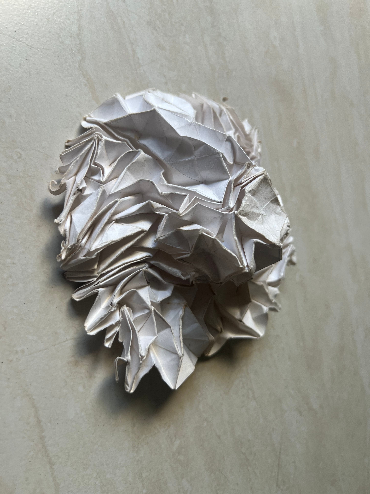
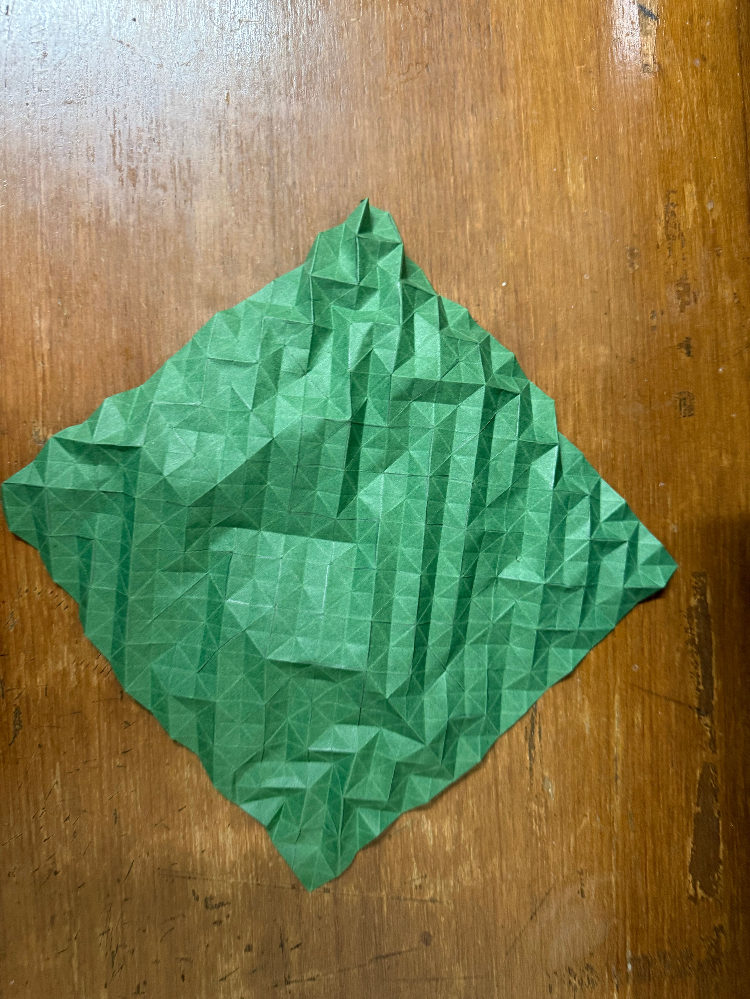
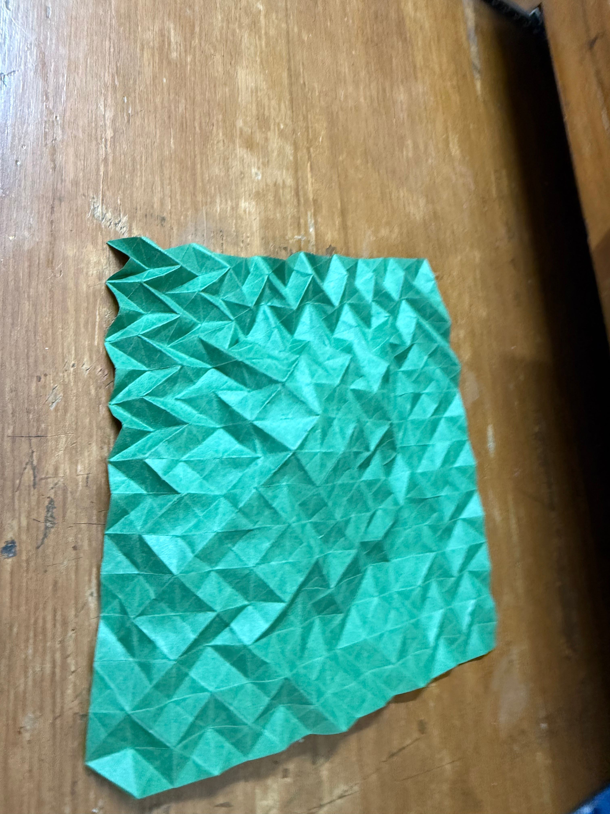
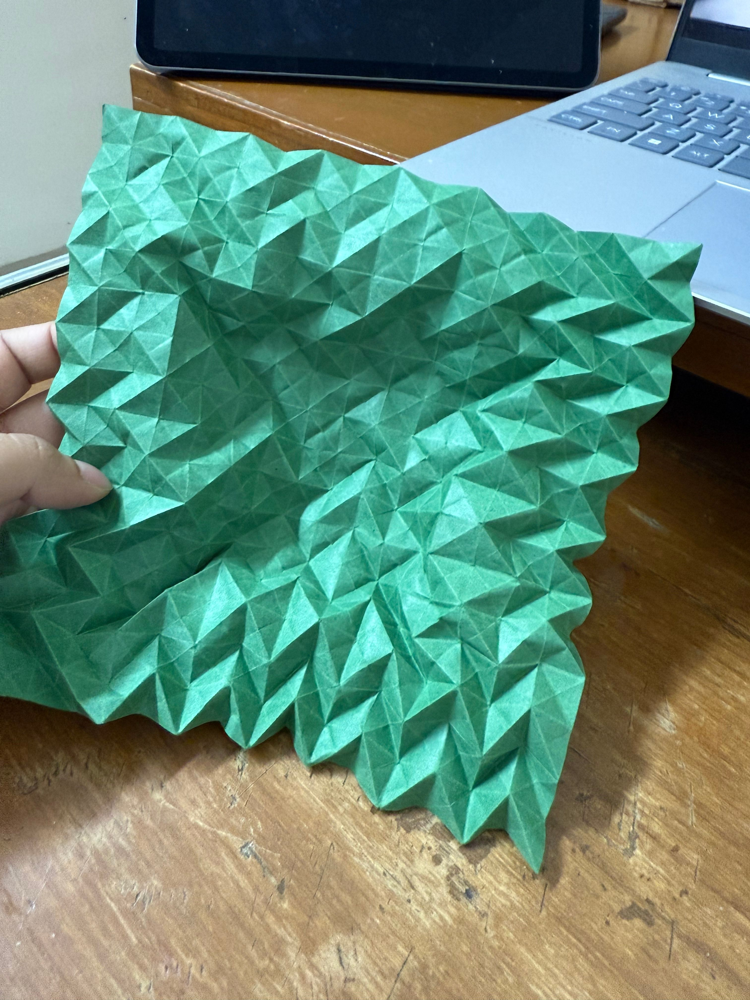
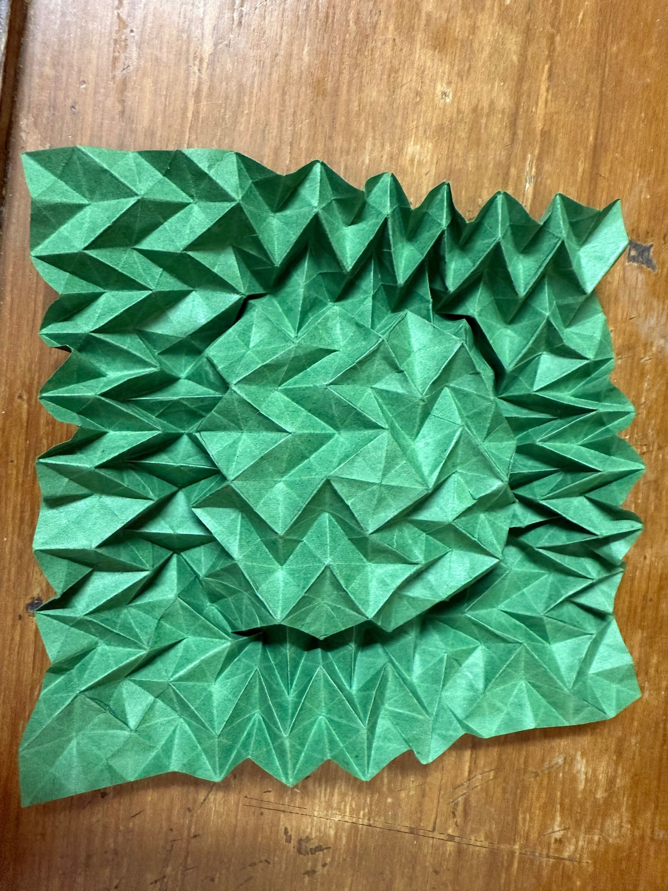
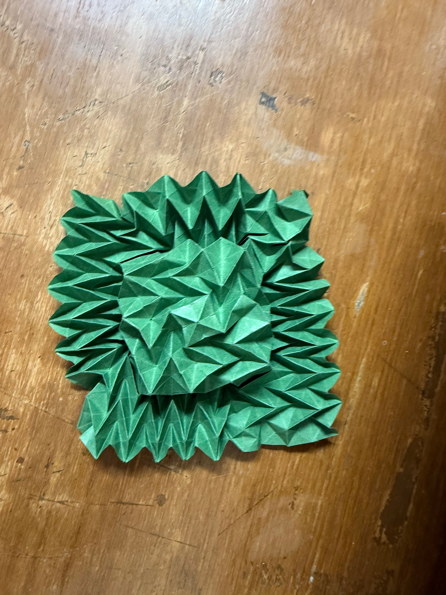

I created this flasher hat by following Jeremy Shafer’s Baby Flasher tutorial.
This model was especially fun because it combines structure, movement, and patience.
It begins as a carefully creased sheet and slowly transforms into a compact,
textured form that can expand and collapse in a really satisfying way.
My First Attempt
I had originally tried making this form from printer paper cut into a square,
and this is how it turned out. The folds technically worked, but the paper
was not ideal for repeated collapsing and shaping. Because of that, the final
result looked rough and did not hold the structure as cleanly as I wanted.

Even though that version was not very successful, it helped me understand how
the model behaved and what kind of paper would work better the next time.
Trying Again with Better Paper
This time, I decided to approach it with an 8 × 8 inch origami sheet.
I first created a 16 × 16 grid. Honestly, this is exactly the kind of repetitive
precision task that my origami folding machine could have helped with.
Starting with better paper made a huge difference because the creases held
more cleanly and the model had a lot more structure from the beginning.
You can see more about the folding machine I built
here
.

The initial 16 × 16 grid and pre-creasing stage.

The crease pattern beginning to take shape.
Folding Process
After setting up the grid, I followed the crease pattern and patiently kept
folding along it while watching the video to understand how the paper was
supposed to move. A lot of this process was less about making individual folds
and more about gently guiding the paper into the correct geometry.

Early shaping, with the surface texture starting to appear.

The model beginning to collapse inward.

A more compact and structured intermediate form.
Final Result
Finally, after a couple of hours, I had the flasher hat in my hands.
What I love most about this model is how dramatic the transformation is.
It starts as a flat sheet full of careful geometry, then turns into a
sculptural form with depth, texture, and movement.
Top view of the finished flasher hat.
Side view showing the depth and structure of the final form.
Reflection
This model reminded me how much origami is about patience. Even when I had
the correct crease pattern, I still had to spend time understanding how the
structure wanted to move. It was really rewarding because I could literally
see the piece becoming more alive as I worked through it.
It also made me appreciate how useful tools can be in origami. Making the grid
by hand worked, but it definitely made me think about how helpful a folding
machine could be for repetitive precision tasks like this.